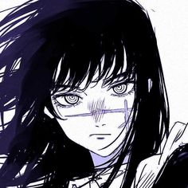

As you can tell from the theme I like Chainsaw Man and esp Asa, but to be honest that's the only anime/manga series I've watched recently. I've always liked Land of the Lustrous & Madoka Magica tho ^^
I also like listening to music a lot (check out the music page - I put some of the albums I listened to recently). I also play piano and used to be really good at it - hopefully I'll get back into it soon